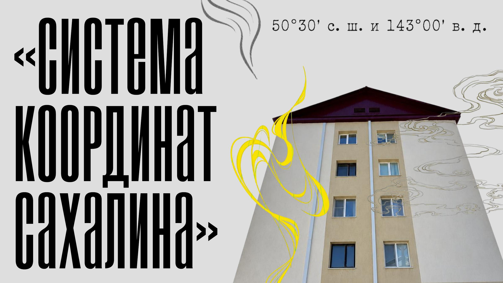
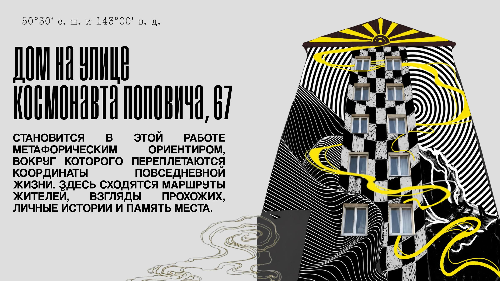
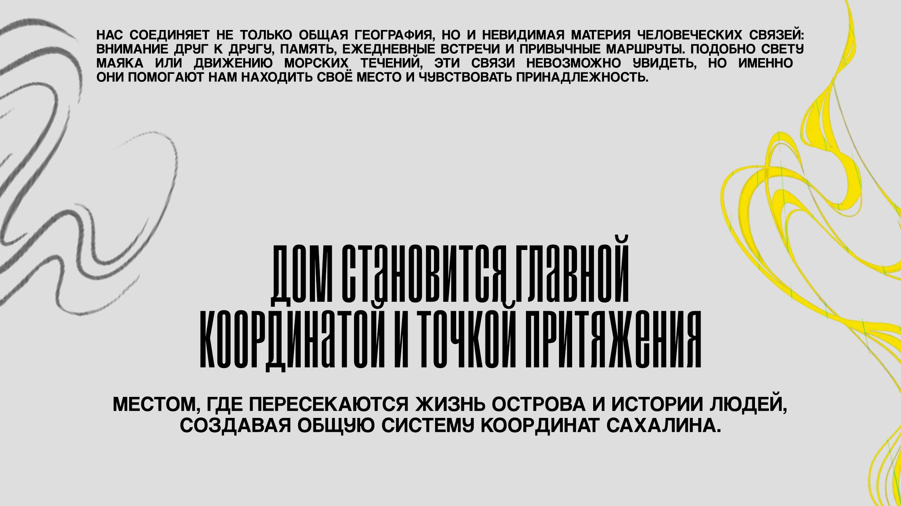
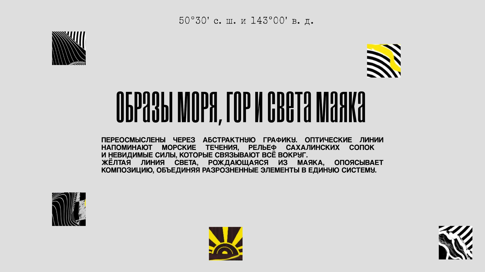
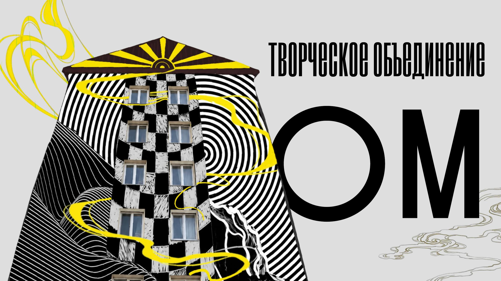

Система
координат
Конкурсная работа для дома на улице Космонавта Поповича, 67 на Сахалине.
- Роль
- Идея / эскиз
- Статус
- Полная презентация
- Автор
- Оксана Никитина
О проекте
Конкурсная работа для дома на улице Космонавта Поповича, 67 на Сахалине.
Визуальная система соединяет координаты места, образы моря, гор и света маяка. Ниже представлена авторская презентация целиком.
Полная презентация / 5 слайдовОткрыть оригинал PDF ↗




